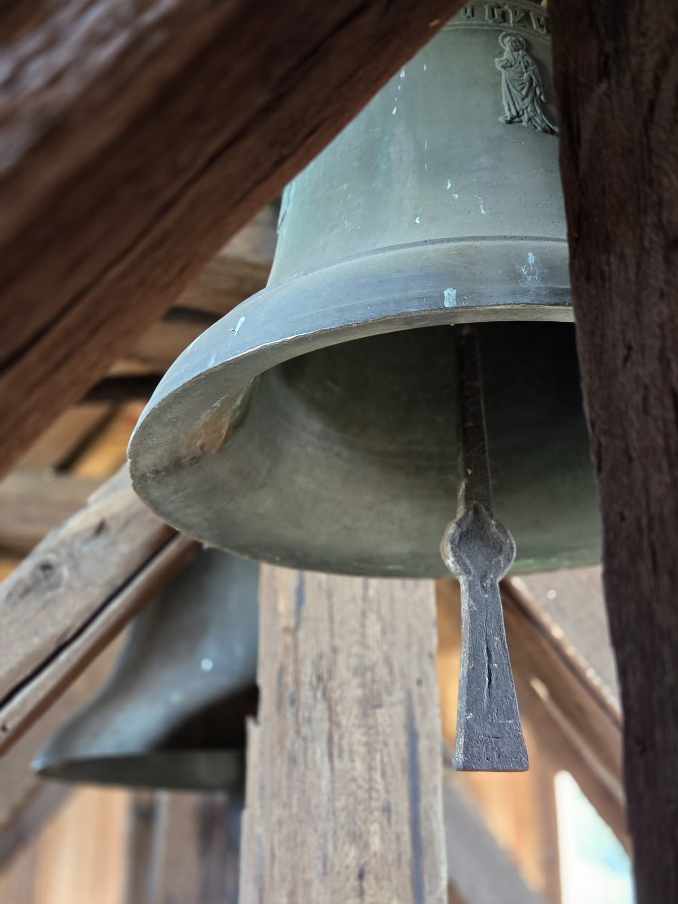
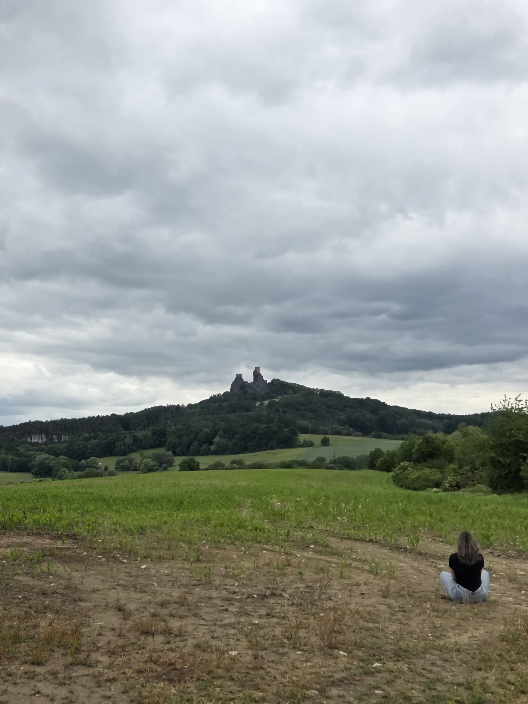
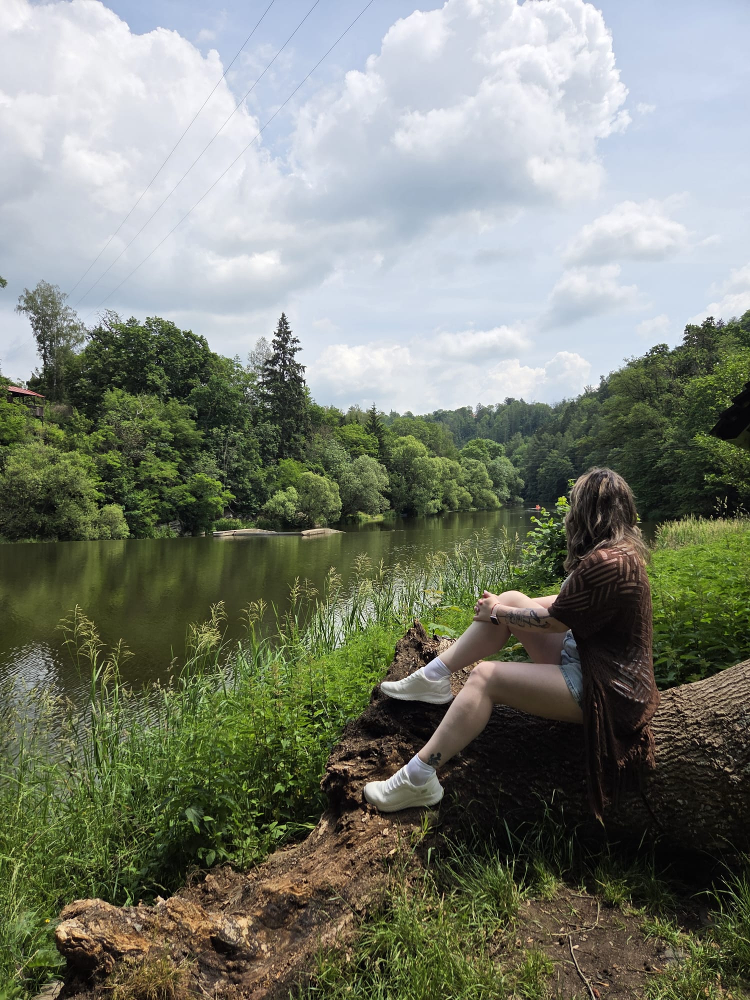
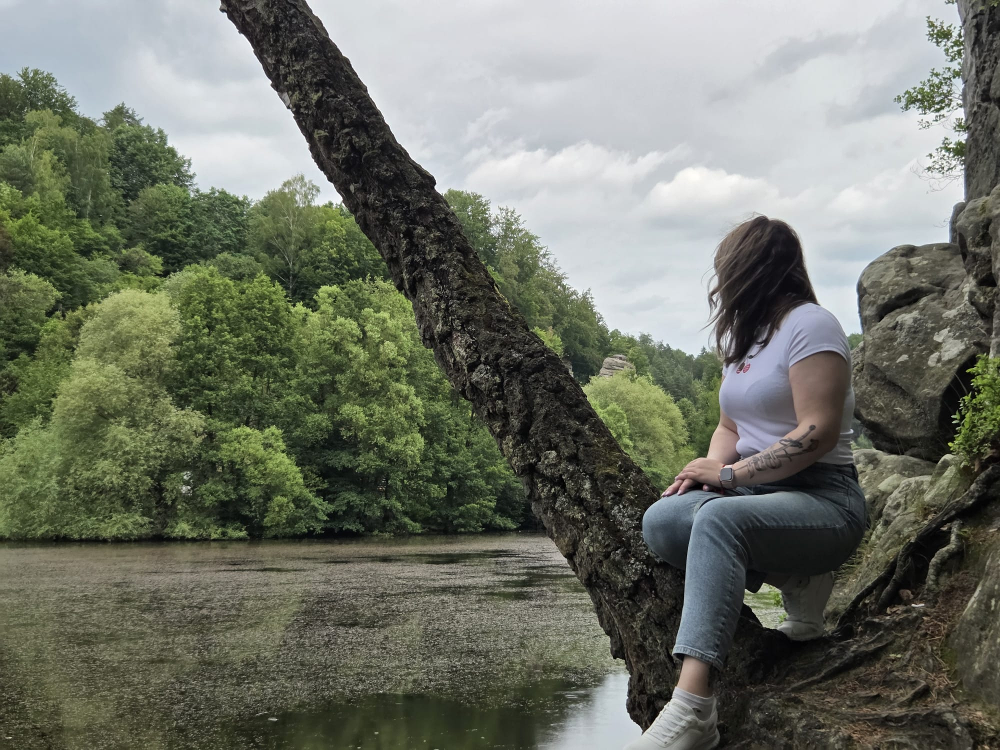
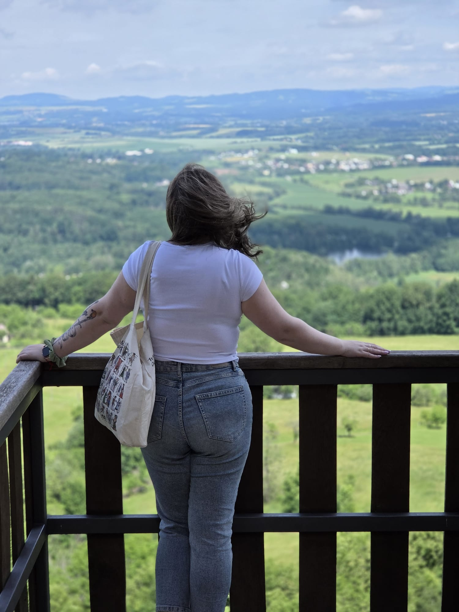
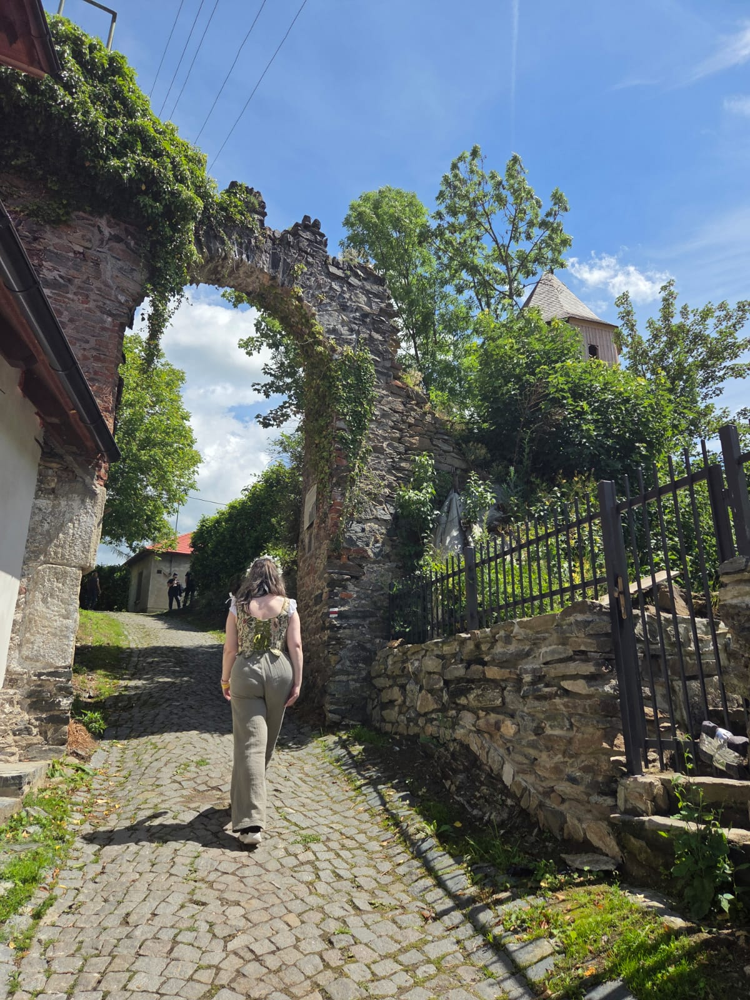

Die Welten, die meine Arbeit prägen
Ich habe schon als Kind immer gern gemalt und gebastelt, aber das, was ich heute mache, hat einen gemeinsamen Ursprung: Kingdom Come Deliverance

Das Spiel, das den Grundstein für all das gelegt hat
Kingdom Come: Deliverance ist wahrscheinlich der Grund, warum JessyIsCrafting heute so existiert, wie es existiert. Die Kraft eines Videospiels als Kunst an sich ist sehr stark und inspirierend.
Ich entdeckte die Landschaften Böhmens, so grün und meiner Heimat ähnlich, dass ich mich wie zu Hause fühlte. Seine Figuren, seine Art Direction und sein Soundtrack sind die perfekte Ergänzung, um dem Werk Farbe zu geben.
Eine unendliche Welt der Inspiration, mit der man praktisch alles erschaffen kann.
Aber ich brauchte mehr, und wie ich ging es Hunderten von Menschen. Ich entdeckte die Welt der Fanfics und wusste sofort, dass sie genau das Richtige für mich ist. Nicht nur lesen, sondern eigene Geschichten schreiben und mit anderen teilen.
Dasselbe gilt für die Kunst. Ich erinnere mich nicht, jemals eine so große kreative Explosion erlebt zu haben wie mit Kingdom Come Deliverance. Ich spreche nicht nur von Gemälden: Ich habe mich getraut, meine ersten digitalen Zeichnungen zu machen und Wege zu erkunden, die ich nie zuvor ausprobiert hatte.

Die andere Hälfte meines Kopfes
Wenn ich nicht male, lese oder schreibe ich wahrscheinlich gerade. Ich habe es schon immer geliebt, die Lücken zu füllen, die eine Geschichte offenlässt: was eine Nebenfigur denkt, was zwischen zwei Szenen geschah, was in einem Moment empfunden wurde, den das Spiel kaum streift.
Und weil ich noch mehr brauchte, konnte ich nicht widerstehen: Ich bin nach Böhmen gereist! Ich musste diese virtuellen Schauplätze, in denen ich Stunden und Stunden verbracht habe, selbst auf meiner Haut spüren und jeden Winkel genießen, als wäre ich wirklich dort.
Ich beschloss, alle Orte aus beiden Spielen zu besuchen, und keiner hat mich enttäuscht. Die böhmische Wiese ist spektakulär, und die bergige Landschaft von Trosky gehört zu meinen Favoriten. Ich empfehle dringend, diese Reise einmal im Leben zu machen.



